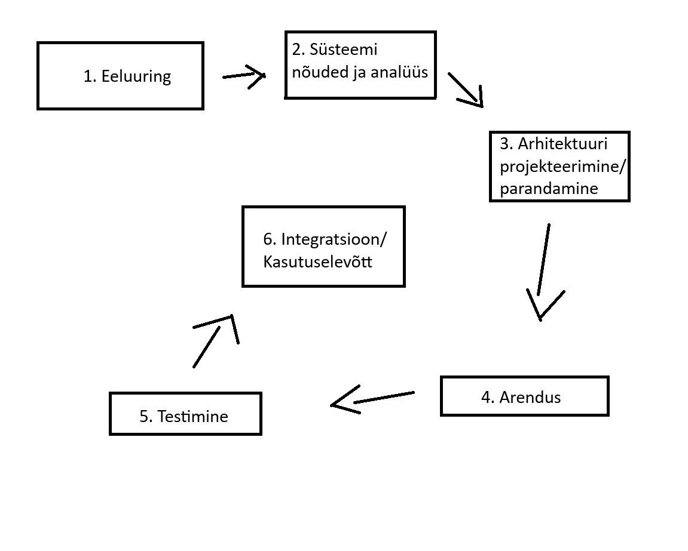

Iteratiivne arendusmudel on SDLC meetod, mille eesmärk on lahendada probleem mille tekitab
tavaline jäikmudel. Jäikmudeli (nagu Waterfall) rakendamisel ei saa muudatusi teha arenduse
teostamise ajal. Iteratiivsed araendusmudelid aga lubavad seda teha iga iteratsiooni vahel.
Iteratiivne arendusmudel on ise ka tegelikult kombinatsioon Iteratiivsest endast ja inkrementaal-
mudelist, seda seetõttu, et ühe iteratsiooni ajal saab kas olemasolevat struktuuri muuta (uus iteratsioon
vanast) või lisada sellele midagi juurde (uus inkrement vanale).
Iteratiivne arendusmudel sobib näiteks juhul, kui klient või lõppkasutaja vajab funktsiooni
teistsugust toimimist või midagi uut juurde.
Näide: On olemas MMORPG kus mängija saab tappa koletisi, aga mängijad soovivad ka teisi
mängijaid tappa. Arendusmeeskond võtab kuulda ning arendab juurde meetodid ja funktsioonid
koos muude multimeediavaradega selle mängijale võimalikuks muutmiseks.
Tulemuseks on see, et avatakse 1v1 areen.
- Arendusmudel sobib ka sellistel juhtudel, kus tingimused arenduseks on üheselt määratud
ning kõigile meeskonnaliikmetele selged ja üheselt arusaadavad.
- Iteratiivne arendusmudel sobib ka olukordades, kus on turu ja/või konkurentsisurve mingis
tootekategoorias. Võib olla kas siis uus arendus lastakse välja osalise funktsioonalsusega
või arendatakse vanale olemasolevale projektile uus osa juurde, samuti osalise funktsioonalsusega
- Saab kasutada arendusmudelit ka siis, kui rpojekt rakendab uudset metoodikat või tehnoloogiat
mingisuguse lahenduse arendamiseks, ning mille käigus meeskonnaliikmed paraleelselt ka õpivad
uut tööriista/metoodikat tundma.
- Või siis saab kasutada kui projekti eesmärk ajas muutub. Projekt algab ühe eesmärgiga, kuid
kasutajatestimine näitab hoopis mõne kõrvalise funktsionaalsuse kasulikumat olekut või kasutatakse
toodet eeldatust täielikult teistmoodi. Sellisel juhul saab arendusmeeskond suunata projekti ümber
kasutajate poolt ettenäidatud käitlemise suunas (arendus sihitakse sellele kuidas kasutaja kasutab
mitte kuidas arendajad seda ette nägid).

| Tugevused | Puudujäägid |
| Paindlikkus mis tagab kiired tulemused. Iteratiivses arenduses saab jaotada kliendi poolt tulnud probleemi või nõude mitmeks väiksemaks osaks, ning need omakorda üksikuteks funktsioonideks. See aitab valmis saada mingisuguse versiooni tootest üsna kiiresti. Olenevalt projektist isegi tundidega või mõne päevaga. Selline tükeldamine lubab arendusmeeskonnal endale parajad probleemid ette seada. |
Projekti edasises arendusjärgus või hilises etapis võivad muudatused (olenevalt selle suurusest ja kontekstist) muutuda kulukaks. Näiteks leitakse üles struktuuirs fundamentaalne viga, ning see algne arendustöö on nüüd mitme erineva teenuse või funktsioonikihi all. Muudatus siin tähendab muudatusi ka kõikides teistes süsteemides mis sellele tuginevad. |
|
Lihtne omaksvõtt ning kliendi rahulolu. Tänu pidevatele uuendustele, on iteratiivne arendus arendajale mugav lubades võtta poolepealt juurde uusi nõudeid või soove kliendilt, tagades kliendile sobivama toote. Iteratiivses mudelis leitakse ka vead suhtelist ruttu üles, ning nende parandamine tõhustab toote rakendamist ja omaksvõttu ka kasutajale. Vigade parandus ise toimib ka jooksvalt. |
Kõrgem surve, et saada projektile kasutajaid, kes peavad siis toote kohta arendajaile tagasisidet andma. Kosemudelis saab kasutaja toote kätte alles arenduse lõpus, pärast mida muudatusi sisse viia ei ole võimalik. Kuna iteratiivses ei ole 100% nõudeid arendustöö alguses määratud, saadakse täiendavaid nõudeid lõppkasutajatelt arenduse ajal. |
|
Lihtne versioonihaldus. Iteratiivses arenduses on põhimõttelist iga uus väljalase uus versioon, mis aitab ära hoida katkise süsteemi leviku. Näiteks: Lastakse välja FPS mängus patch, mis rikub ära kasutaja hüppamisfüüsika (on lag), arendusmeeskond saab reageerida sellele kiirelt, keerates live väljalaske tagasi vanale versioonile, parandab vead, ning siis laseb juba parandatud patchi uuesti välja. |
Eripärade ja omaduste kasutajani jõudmine. Tihtipeale peavad kasutajad uusi funktsioone arendusmeeskonnalt ise küsima, või ootama kuni arendusjärk selle funktsioonini mis neil vaja on, jõuab. Uute versioonide puhul peavad kasutajad harjuma ka uute kasutajaliideste eripäradega või koguni uuena kasutajaliidesega. Uuega harjumine võtab aega ja tahtmist. |
|
Sobib organisatsioonidele mis rakendavad erinevaid agiilseid arendus- metoodika praktikaid. Ta toimib väga hästi väiksemates agiilsetes rühmades, kus vastutus on jaotatav meeskonnaliikmete vahel, ning mis võimaldab iteratsiooni läbida suhteliselt kergelt ning kiirelt. (mugav arendajatele). |